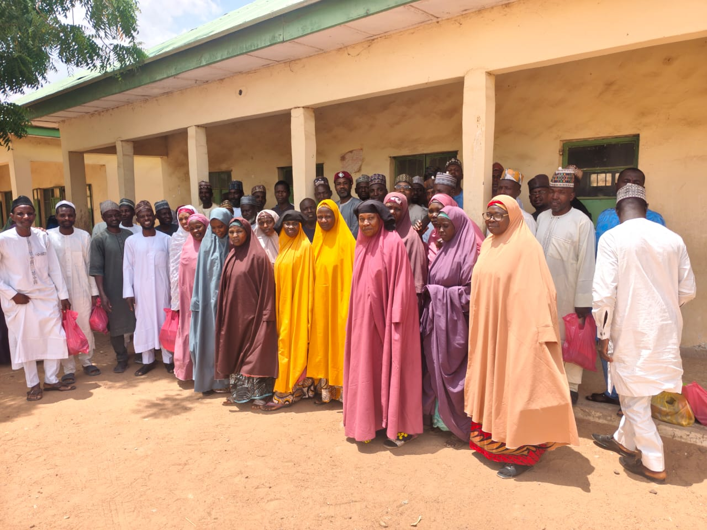
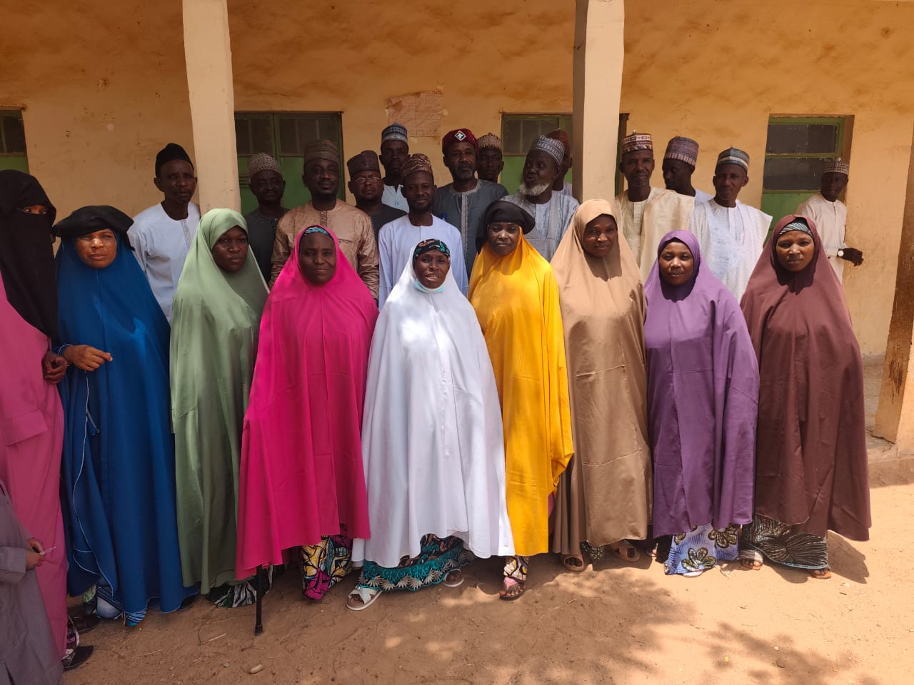
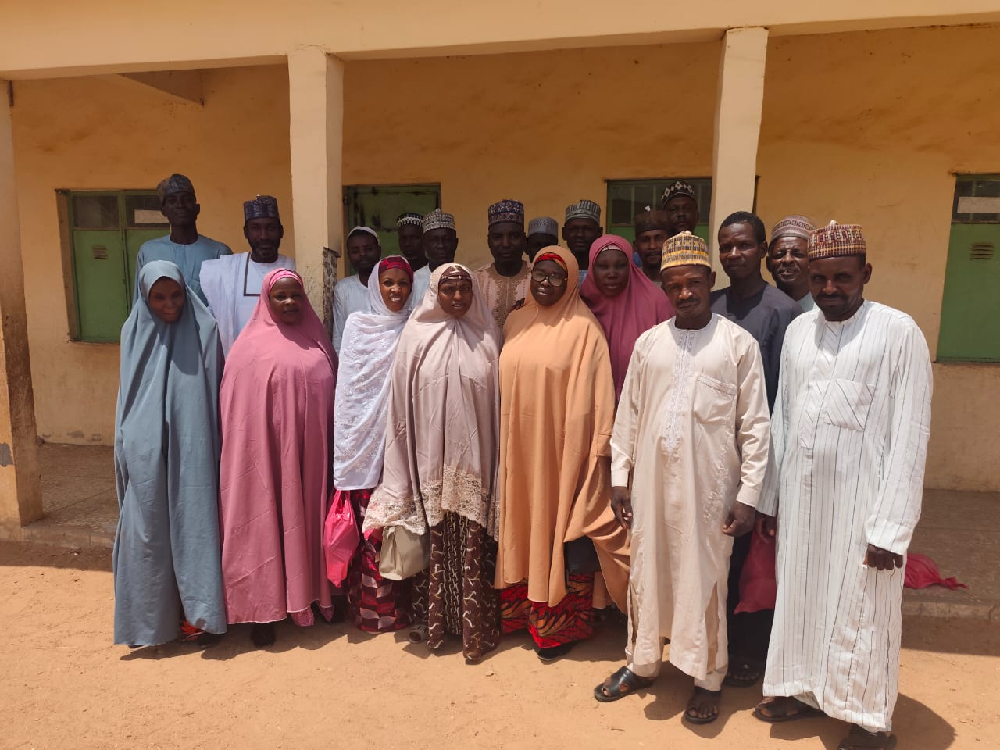

Official digital platform of Central Primary School Misau Old Boys Association, connecting former pupils across all graduating sets and preserving the school's heritage since 1919.
Established in 1919, Central Primary School Misau has a long-standing history of educating generations of pupils and contributing to the development of the community.
The Central Primary School Misau Old Boys Association brings together former pupils from different graduating sets to promote unity, preserve our shared heritage, support one another and contribute to the development of their alma mater.
The Class of 1988 is among the graduating sets whose members have taken an initiative towards strengthening this connection through modern digital communication and the development of this website.
Learn More About Us
Guiding principles that strengthen our unity and shape our shared future.
To promote friendship, unity, mutual support and meaningful collaboration among members of the CPS Misau Class of 1988.
To build a strong, united and sustainable alumni association that preserves our shared heritage and contributes positively to society.
Friendship, unity, integrity, respect, responsibility, compassion and commitment to collective progress.
A shared history, a lasting friendship and a common commitment.
Our shared graduating year and the foundation of our association.
Our common educational heritage in Misau.
Bringing together members of the 1988 graduating class.
Stronger friendships, shared opportunities and a lasting legacy.
Reconnect with old friends and strengthen the bonds we built in school.
Build a supportive network where members can encourage and assist one another.
Take part in activities that bring classmates together and create new memories.
Work together on meaningful ideas and projects agreed upon by members.
Keep our school memories, photographs and shared experiences alive.
Celebrate achievements and remember classmates who are no longer with us.
Meet the team entrusted with coordinating the affairs and activities of our association.
Association Leadership
Deputy Association Leadership
Administration and Records
Reconnecting classmates and preserving the friendships we built at Central Primary School Misau.
A dedicated directory for members of the 1988 graduating class.
View MembersMembers will be able to provide and update their personal and contact information.
RegisterStay informed about association activities, reunions and important announcements.
Contact UsReuniting old friends, celebrating our shared history and creating new memories.
An opportunity for classmates to reconnect, celebrate friendship and discuss the future of our association.
More DetailsA gathering for members to discuss association matters, share ideas and make collective decisions.
More DetailsWorking together to support meaningful initiatives and make a positive difference.
Exploring opportunities to support education and encourage younger generations.
Promoting mutual assistance, care and support among association members.
Considering initiatives that may contribute to the development of our former school.
Preserving the memories, friendships and special moments of CPS Misau Class of 1988.






Stay informed about the latest news, activities and important announcements of our association.
Important information and official announcements will be published here.
Read UpdatesUpdates about planned meetings, reunions and other association activities.
View ActivitiesForever remembered, deeply missed and never forgotten.
We honour the memories of our beloved classmates who are no longer with us. Their friendship, contributions and shared memories will always remain part of our story.
May their souls rest in perfect peace.
Visit Our Memorial PageWere you part of Central Primary School Misau Class of 1988? Reconnect with your old classmates, become part of our association and help preserve our shared legacy.
We welcome enquiries, suggestions and communication from members of CPS Misau Class of 1988.
Central Primary School Misau Old Boys Association – Class of 1988
Misau, Bauchi State, Nigeria
Official email address to be announced.
Official contact number to be announced.